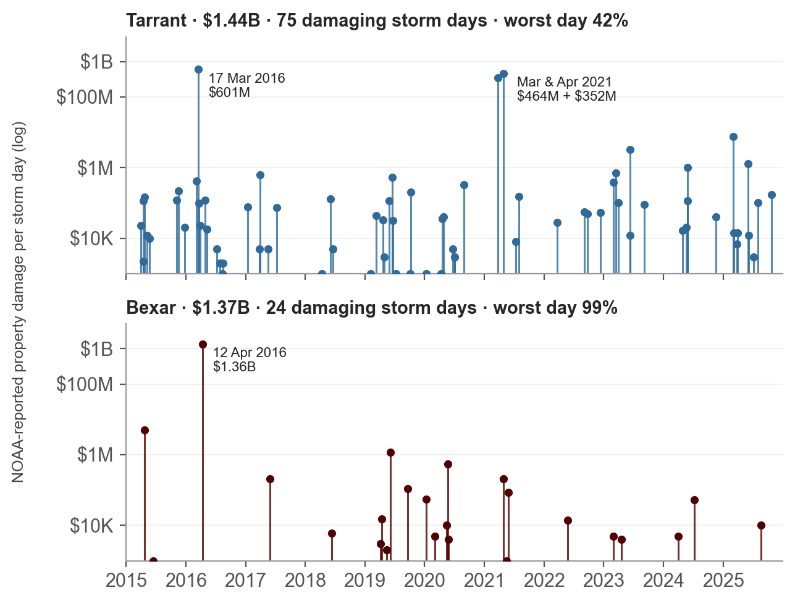
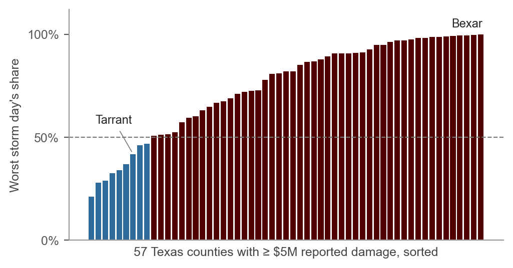
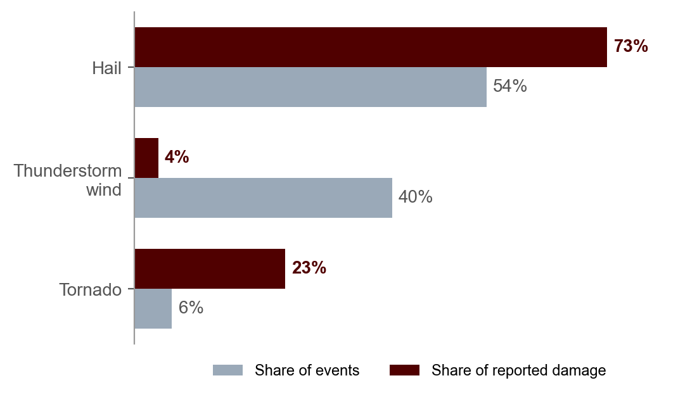
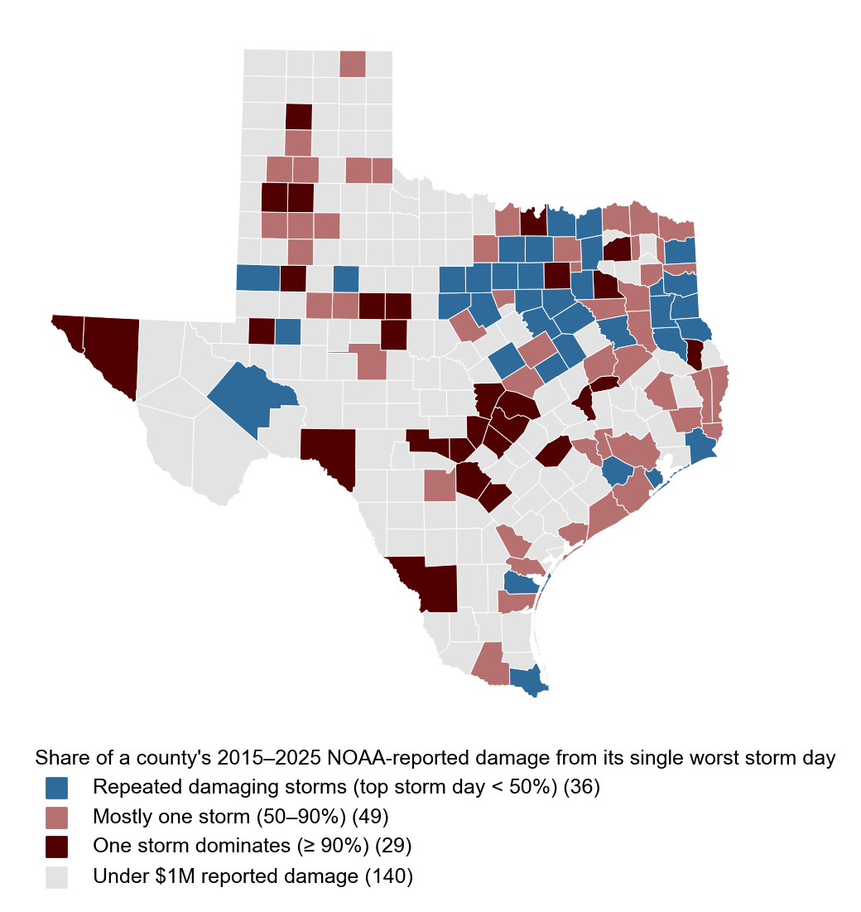
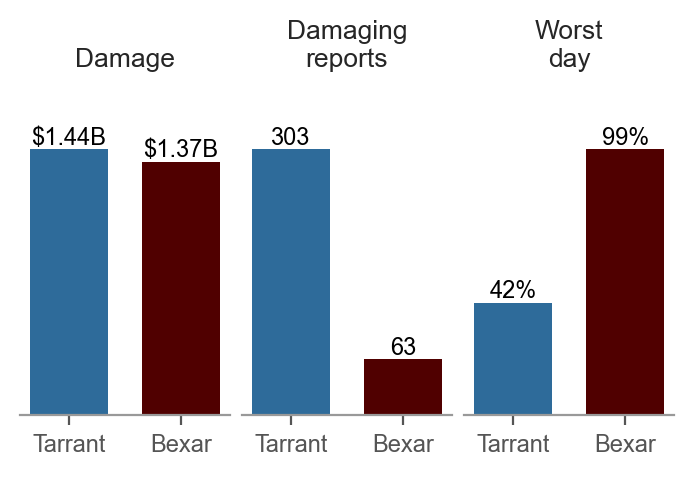
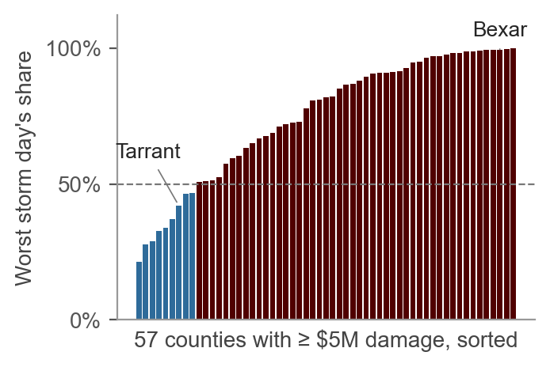
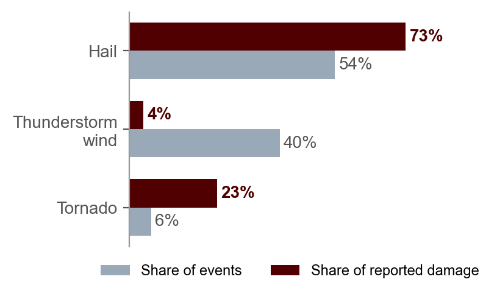
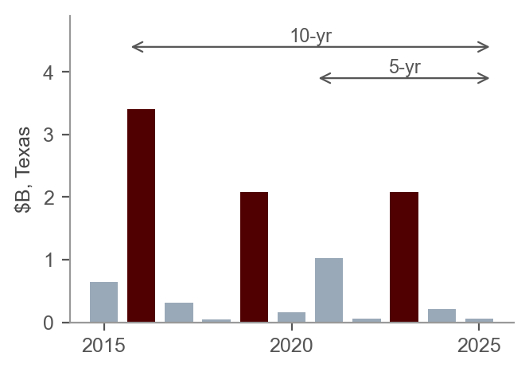
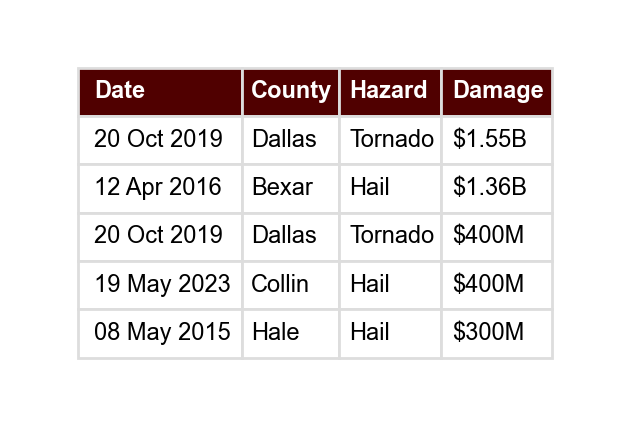
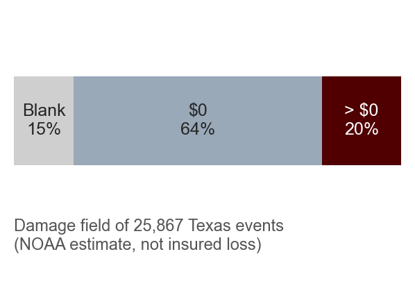

Storm Damage Risk Analytics: recurring and catastrophic severe-weather damage across Texas counties
An interactive visualization that helps insurance analysts compare counties, identify the hazards responsible for historical damage, and distinguish recurring storm impacts from rare extreme events.
Aadi Mahajan · Abhinav Sheshadri · Hendro Setyawan · MD Imtiaz Mahi
Problem statement
Our preliminary analysis of NOAA Storm Events (25,867 Texas hail, thunderstorm-wind and tornado reports, 2015–2025) shows how strong the effect is. Damage is grouped by storm day (all reports in a county on one date), because NOAA often splits one storm into many reports.




Target users
Insurance analysts (primary)
- Underwriting analysts: the storm history behind a location, and whether the record can be trusted.
- Catastrophe-risk analysts: is a county’s damage recurring, or driven by a few extreme events?
- Portfolio-risk analysts: why County A has more damage than County B under the same filters.
Homeowners and communities (secondary)
- Does my county see damaging storms every year, or was one storm the outlier?
- Does recurring local hail justify an impact-resistant roof? TDI encourages insurers to discount such mitigation.
What today’s insurance tools leave out
Insurers rely on powerful commercial tools, but each answers a different question. Based on their public documentation, none of them shows the observed storm record behind a county’s losses. We will check these challenges in our interviews.
Xactimate
What will it cost to repair this damaged home?
- One claim at a time, after the loss
- No view of how often, or by which hazard, a county is hit
- Cannot compare counties’ storm history
360Value
What would this home cost to rebuild?
- Values the building, not the hazard
- Storm history must come from elsewhere
- Raw damage totals ignore how built-up a county is
Risk Modeler
What losses could a portfolio face?
- Modeled averages hide whether losses recur or come from the tail
- Hard to trace results back to real storms and years
- Specialist, licensed tool; vendor models can differ
Our system complements these tools; it does not price repairs or model risk.
Design requirements

R1Geographic loss comparison
Compare storm frequency, total damage and damage per event for two or more counties under the same period and hazard filters.
Why does County A have higher storm damage than County B?

R2Recurring vs. catastrophic loss
Mean vs. median damage per event, the largest events, and the share of damage from the top 1 or 5 events.
Regular damaging storms, or a few extreme events?

R3Hazard contribution
Each hazard’s share of events and of damage; most frequent vs. most damaging hazard.
Is the damage mainly hail, tornado or thunderstorm wind?

R4Temporal loss pattern
5-, 10- and 20-year windows, annual frequency and damage, unusually high years.
Repeated damaging storms, or losses concentrated in one or two years?

R5Storm event investigation
A county’s most damaging events with date, location, hazard, magnitude and damage, linked to totals and trends.
Which storm events explain this county’s high damage?

R6Data context and interpretation
Separate NOAA estimates from insured claims, flag missing data, add development context, and never show history as a risk score or premium advice.
Can I trust this comparison, and what are its limits?
Data
| Dataset | Unit · years | Key fields | Role |
|---|---|---|---|
| NOAA NCEI Storm Events | Event → county · 2006–2025 | Hail, thunderstorm wind, tornado; date, location, magnitude, damage estimate, narrative | Storm history (R1–R5) |
| TDI homeowners losses by county | County × year · 2019–2025 | Paid losses by type; policies in force | Insured-loss reference (R6) |
| U.S. Census ACS 5-year | County | Housing units, owner-occupied homes, median home value | Development context (R1, R6) |
| TDI premiums and HB 2067 reasons | County / ZIP · 2019–2026 | Average premium; nonrenewal and declination reasons | Market context |
Caution. NOAA damage is an estimate, not insured loss. TDI losses cover homeowners policies only (no TWIA wind/hail). Preliminary figures use 2015–2025; the system will cover 2006–2025.
Interviews and plan
We plan seven 45-minute semi-structured interviews (underwriters or adjusters, a catastrophe analyst, a public-sector reviewer, homeowners or community members, and a faculty pilot): workflow and tools, pain points, a think-aloud with one task per requirement, and ranking R1–R6. Interviews are being scheduled; no findings are reported yet.
| Member | Role |
|---|---|
| MD Imtiaz Mahi | Data integration and context (R6) |
| Aadi Mahajan | County comparison (R1, R3) |
| Hendro Setyawan | Recurring vs. catastrophic (R2, R4) |
| Abhinav Sheshadri | Event investigation (R5) |
October: interviews and requirements · Oct–Nov: data integration · November: prototype · Nov–Dec: think-aloud feedback · December: final system.
The interactive mock-up on this site is preliminary work: an early probe for the interviews, to be revised toward R1–R6.